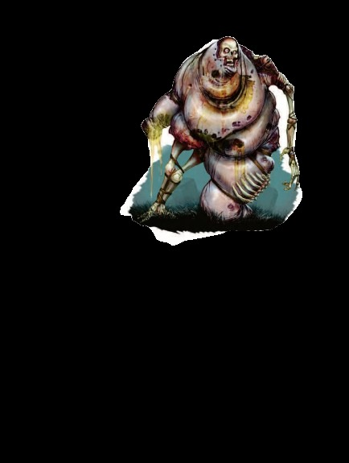

中型不死生物 | 挑战级数 3一个步态不稳的尸体向前踉跄移动，形状像一颗肿胀腐烂的大球。它布满血丝的眼睛来回乱转，喉咙深处发出咕噜声。
疫病行尸 ―― 总是混乱邪恶。
| 生命骰 | 6d12+3（42HP） |
| 先攻 | -2 |
| 速度 | 20 英尺 (4格) |
| 防御等级 | 12，接触 8，措手不及 12（-2敏捷，+4天生） |
| 基本攻击/擒抱 | +3 / +7 |
| 近战攻击 | 2次爪击 +8 (每次1d6+4 外加疫病之触) |
| 占据/触及 | 5 英尺 / 5 英尺 |
| 特殊攻击 | 疫病之触 |
| 特殊动作 | 腐烂爆发 |
| 特殊能力 | 黑暗视觉 60 英尺；免疫：不死生物免疫能力；肿胀目标 |
| 豁免 | 强韧 +2，反射 +0，意志 +6 |
| 属性 | 力量 18，敏捷 6，体质 ―，智力 4，感知 13，魅力 3 |
| 技能 | 攀爬 +7，聆听 +10，侦查 +1 |
| 专长 | 技能专攻 (聆听)、强韧加强、武器专攻 (爪击) |
| 语言 | 能理解创造者的命令 |
疫病之触 (Su)：任何被疫病行尸爪击命中的活物需通过一次 DC 13 的强韧豁免，否则会因剧烈疼痛和恶心而受到影响，并陷入恶心状态，持续 1 分钟。此豁免 DC 基于体质。对疾病免疫的生物不受此能力影响。
腐烂爆发 (Ex)：当疫病行尸的生命值降至初始生命值的四分之一或更少时，它可以用一个迅捷动作发动爆炸。此爆炸半径为 30 英尺，对范围内的一切造成 3d6 点伤害。范围内的所有活物受到 1 轮反胃效果影响，需进行一次 DC 15 的反射豁免，成功则伤害减半并免受反胃效果。此豁免 DC 基于体质并包含 +2 的种族加值。
如果疫病行尸在未发动爆炸前被直接杀死，它会崩塌为一堆腐烂的肉体。
肿胀目标 (Ex)：对疫病行尸进行的远程攻击不受射入近战战斗的 -4 减值影响。但此减值仍然适用于与疫病行尸近战的其他生物。
疫病行尸是一种由邪恶法师或牧师创造的不死武器。其扭曲的身体充满腐烂的肉体、带病物质和其他污秽物。在战斗中，它在受创严重时会爆炸，将恶心的残骸洒向四周。
疫病行尸智力过低，无法独立行动，通常由其创造者或其他领袖在战斗中指挥。由于其腐烂爆发能力，疫病行尸通常行进在盟友的前方。大地精 (hobgoblin) 尤为喜爱使用这些生物，因为他们的军队纪律严明，能够在疫病行尸爆炸后再投入战斗。而兽人及其他混乱生物往往会冲入战斗，被爆炸波及，但这并未阻止格乌什 (Gruumsh) 的牧师制造和使用疫病行尸。
聪明的地精战首会命令弓箭手在疫病行尸接触敌人时将其击中，而邪恶施法者通常使用闪电术、火球术或类似法术攻击它。此类法术不仅伤害疫病行尸周围的敌人，还可能引发它的腐烂爆发。
智能不死生物 (特别是那些能够创造疫病行尸的施法者) 常将疫病行尸与非实体不死仆从搭配使用。如果疫病行尸爆炸，非实体同伴不会受到影响并继续战斗。此组合对因恶心而丧失战斗能力的敌人尤其致命。
在许多方面，疫病行尸就是被投入战场的不死战争机器。如果部署不当，疫病行尸对盟友造成的威胁可能与对敌人的一样大。因此，这些怪物最受拥有战略战术能力的邪恶类人生物和施法者欢迎。
活体陷阱 (EL 3)：海克斯托 (Hextor) 的神庙常用疫病行尸作为活体陷阱。高阶牧师会在神庙区域正门内建造陷阱坑，当入侵者袭击时，一名牧师启动陷阱，其他人则坚守神庙。一只疫病行尸站在坑中，当入侵者落入陷阱，弹簧式盖板会关闭并锁住，将入侵者困在与这只恐怖不死生物的密闭空间中。
团队 (EL 5)：一只地精战首雇用的犬魔 (barghest) 侦察兵与一只疫病行尸同行。巴格斯特远距离跟踪疫病行尸，等待敌人发动攻击。疫病行尸爆炸后，巴格斯特会利用任意门能力瞬间出现在敌人之间展开攻击。
生态：作为专为战争制造的不死生物，疫病行尸并不属于自然环境。有传闻称它们是某种罕见疫病的产物，但实际上，任何染病的尸体都可以用来制造这种怪物。
如果疫病行尸与主人分离，它会停留在原地，尽力完成最后接到的命令。因此，一只被命令在地牢深处守卫的疫病行尸可能会在几百年间始终履行其职责，直到有入侵者打扰它。尽管疫病行尸智力低下，但它能理解通用语中的简单短语，也可以被命令忽略携带特定圣徽或说出指定口令的生物。然而，由于疫病行尸无法处理复杂情况或条件，其分辨敌友的能力依赖于简单的标志。例如，它可能被命令永远不要攻击大地精，或只攻击精灵。
聪明的冒险者可以通过穿上敌人的制服、展示适当的圣徽或使用其他形式的伪装来迷惑疫病行尸，从而不受其干扰。因此，疫病行尸的主人必须谨慎地下达命令，因为含糊不清或容易被利用的指令会使这种生物失去作用。
环境：疫病行尸通常出现在那些掌握其制造秘密的地方。
典型身体特征：疫病行尸大约 6 英尺高，体重约 300 磅。
阵营：疫病行尸被制造出来的唯一目的就是传播疾病和毁灭，因此它们永远是混乱邪恶的生物。
玩家角色使用：制造疫病行尸的过程相对简单，但其成本使得大多数施法者在战争以外的时期无法大量制造这些生物。任何 6 级或以上、能够施放死灵法术的奥术或神术施法者都可以制造疫病行尸。此过程需要执行一场恐怖的仪式，耗费价值 800 金币的邪水 unholy water、四具死于疾病的中型生物尸体以及两天的祈祷时间 (两具小型尸体等于一具中型尸体，一具大型尸体等于两具中型尸体)。仪式结束时，这些尸体会融合成一只疫病行尸，其完全服从创造者的命令。
疫病行尸的创造者可以命令它听从某个下属的指挥，实际上将其控制权移交出去。这种安排使得军队可以由非施法者指挥官控制疫病行尸。
在艾伯伦：坎纳斯 (Karrnath) 的死灵法师掌握了制造疫病行尸的技术，并在终末战争期间将其用于攻城和其他特殊行动。然而，在大型战斗中，疫病行尸的表现并不可靠，除非它们被集中在难以绕过的大规模阵型中。
"血之信仰"的牧师，尤其是那些拥有充足时间和资源的牧师，会将疫病行尸用作守卫和执行者。该教派在萨恩 (Sharn) 的一派势力，将疫病行尸安置在其主神庙中。如果入侵者突破内殿，牧师们会跑到安全的房间内，锁上门并触发机关。机关会放下铁栅，将入侵者困在神庙内，同时开启四个暗门，每个暗门后都藏有一只疫病行尸。即使入侵者成功击败这些行尸，其随后的爆炸也会让他们难以应对牧师的反击。
在费伦：疫病行尸首次出现在几个世纪前的 Chondath 腐败战争期间。自那以后，制造疫病行尸的技术通过塔洛纳 (Talona) 教会的密谋传播至整个费伦大陆。
塞尔 (Thay) 的红袍法师大量制造疫病行尸，并将其出售至世界各地。由于疫病行尸的控制权易于转移，这些生物成为需要可靠部队的军阀理想的守卫和士兵。犯罪领主以及那些担心内奸背叛的人也会用疫病行尸作为威慑力极强的忠诚保镖。
拥有 宗教知识 (Knowledge (Religion)) 技能的角色可以了解更多关于疫病行尸的信息。成功的技能检定可以揭示以下内容，包括较低 DC 的信息：
DC 13：这是疫病行尸，一种令人作呕的不死生物。此结果揭示所有不死生物特性。
DC 18：疫病行尸布满污秽的爪击能使生物陷入恶心状态。
DC 23：当疫病行尸受到足够伤害时，它会以恶心的爆炸结束生命。如果在爆炸前被直接击杀，它会塌为腐烂肉堆。